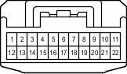

Наименование
Разъем распределительного блока
Код
G93
Каталожный номер
90980-12372
Цвет
Серый
Технические характеристики
Жгуты проводов для ремонта

Расположение
Расположение деталей в панели приборов (для моделей с левосторонним рулевым управлением) 3
Расположение деталей в панели приборов (для моделей с правосторонним рулевым управлением) 3
Система
Система кондиционирования
Система зарядки (для моделей с 1KD-FTV)
Система зарядки (для моделей с 2TR-FE)
Система зарядки (для моделей с 5L-E)
Вентилятор конденсатора
Система двойной блокировки (для моделей с левосторонним рулевым управлением)
Система двойной блокировки (для моделей с правосторонним рулевым управлением)
Иммобилайзер двигателя (для моделей с системой посадки и запуска)
Система иммобилайзера двигателя (для моделей без системы посадки и запуска)
Система посадки и запуска
Система помощи при парковке (сенсорная система помощи при парковке TOYOTA) (с 8 датчиками, для моделей без системы навигации и многофункционального дисплея)
Система запуска (для моделей с системой посадки и запуска)
Система блокировки рулевого управления (для моделей с системой посадки и запуска)
Противоугонная система
Сцепное устройство для прицепа
Указатели поворота и аварийная сигнализация (для моделей с левосторонним рулевым управлением)
Указатели поворота и аварийная сигнализация (для моделей с правосторонним рулевым управлением)
Система дистанционной блокировки дверей (для моделей с системой посадки и запуска)